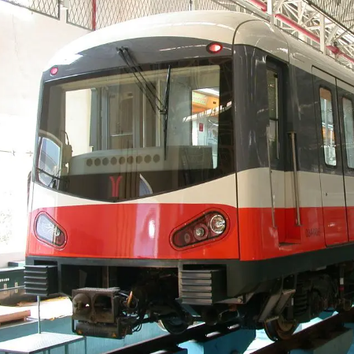

3号线共33站，其中海傍、番禺广场、汉溪长隆、沥滘、客村、广州塔、珠江新城、体育西路、天河客运站、林和西、广州东站、燕塘、嘉禾望岗、高增为换乘站
海傍站——3号线换乘4号线、22号线：24号屏蔽门
番禺广场站——3号线换乘18号线、22号线：22号屏蔽门
汉溪长隆站——3号线换乘7号线：20号屏蔽门
沥滘站——3号线换乘广佛线：24号屏蔽门
客村站——3号线换乘8号线：3号屏蔽门
广州塔站——3号线换乘APM线：5号屏蔽门
珠江新城站——3号线换乘5号线黄埔新港方向：4号屏蔽门
3号线换乘5号线滘口方向：21号屏蔽门
体育西路站——3号线换乘1号线：21号屏蔽门
3号线番禺广场方向换乘3号线天河客运站/机场北方向：3号屏蔽门或14号屏蔽门、穿过列车
3号线天河客运站/机场北方向换乘3号线机场北方向：同台换乘
3号线体育西路方向换乘3号线番禺广场方向：同台换乘
3号线体育西路方向换乘3号线天河客运站/机场北方向：同台换乘
3号线番禺广场方向换乘3号线机场北方向：同台换乘
天河客运站——3号线换乘6号线：19号屏蔽门
林和西站——3号线换乘APM线：9号屏蔽门
广州东站——3号线换乘1号线：5号屏蔽门
燕塘站——3号线换乘6号线：10号屏蔽门上扶梯后右转或21号屏蔽门上扶梯后左转，高峰期客控不适用时17号屏蔽门到-2层
嘉禾望岗站——3号线机场北方向换乘2号线：15号屏蔽门
3号线体育西路/番禺广场方向换乘2号线：同台换乘
3号线换乘14号线：4号屏蔽门或21号屏蔽门
高增站——3号线换乘9号线：6号屏蔽门